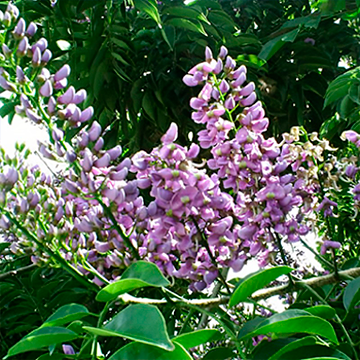
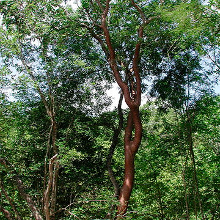
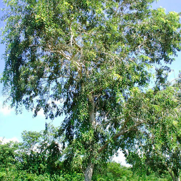
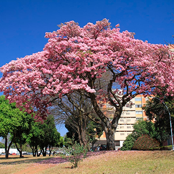

Plantas Endémicas de Yucatán

El balché es un árbol de tamaño mediano, conocido por su importancia ceremonial en la cultura maya. Su corteza se utilizaba para preparar una bebida fermentada mezclada con miel, también llamada balché, que era consumida en rituales sagrados. Esta infusión tenía un uso espiritual, pero también se le atribuían propiedades relajantes. El árbol tiene hojas compuestas y florece con pequeñas flores moradas que atraen abejas y otros polinizadores. Además de su valor ecológico, el balché es un símbolo de tradición ancestral que todavía se respeta en comunidades rurales del sureste mexicano.

El chaká, también conocido como palo mulato, es un árbol de corteza rojiza y lisa que se desprende en finas capas. Es una de las especies más características del paisaje yucateco, no solo por su apariencia, sino por su significado simbólico: según la tradición maya, este árbol suele crecer cerca del chechén, su “contraparte venenosa”, y se dice que el chaká ayuda a sanar las quemaduras provocadas por el contacto con el chechén. Además de su uso medicinal en infusiones y cataplasmas, el chaká es valorado por su resistencia a condiciones adversas como la sequía, convirtiéndose en una especie clave en la vegetación de la península.

El jabín es un árbol de porte mediano, con una corteza grisácea y flores pequeñas de tonos blancos a rosados. Es comúnmente utilizado para delimitar terrenos, gracias a la resistencia de su madera, que incluso se mantiene firme sin tratamiento. En la medicina tradicional, se le atribuyen propiedades sedantes, y algunas comunidades lo emplean para tratar el insomnio y la ansiedad. Esta especie, resistente a suelos pobres y calizos, es también una de las más usadas en proyectos de reforestación ecológica en Yucatán.
El pich, conocido también como oreja de elefante por la forma característica de sus semillas, es uno de los árboles más grandes de la región, capaz de alcanzar alturas de hasta 30 metros. Su copa ancha ofrece una sombra generosa, lo que lo convierte en un refugio natural para personas y animales. Las semillas, además de ser ornamentales, se utilizan en la creación de artesanías. Su madera es fuerte y útil para la construcción, mientras que sus hojas sirven como forraje para el ganado. El pich es un árbol que refleja la generosidad del entorno tropical: útil, imponente y lleno de vida.

El makuilis rosa es uno de los árboles más llamativos del paisaje yucateco durante la temporada seca, cuando sus ramas se cubren de flores rosadas en forma de campana. Aunque no es exclusivo de Yucatán, su presencia en la región es muy apreciada por su belleza y su función ornamental. Suele florecer entre marzo y abril, justo antes de la temporada de lluvias, y su floración transforma calles y parques en escenas llenas de color. Este árbol también tiene valor ecológico, ya que atrae mariposas, colibríes y otros polinizadores. El makuilis rosa es un verdadero espectáculo natural que marca la transición entre estaciones en el sureste mexicano.
Derechos Reservados Sara Betelli©2025
|